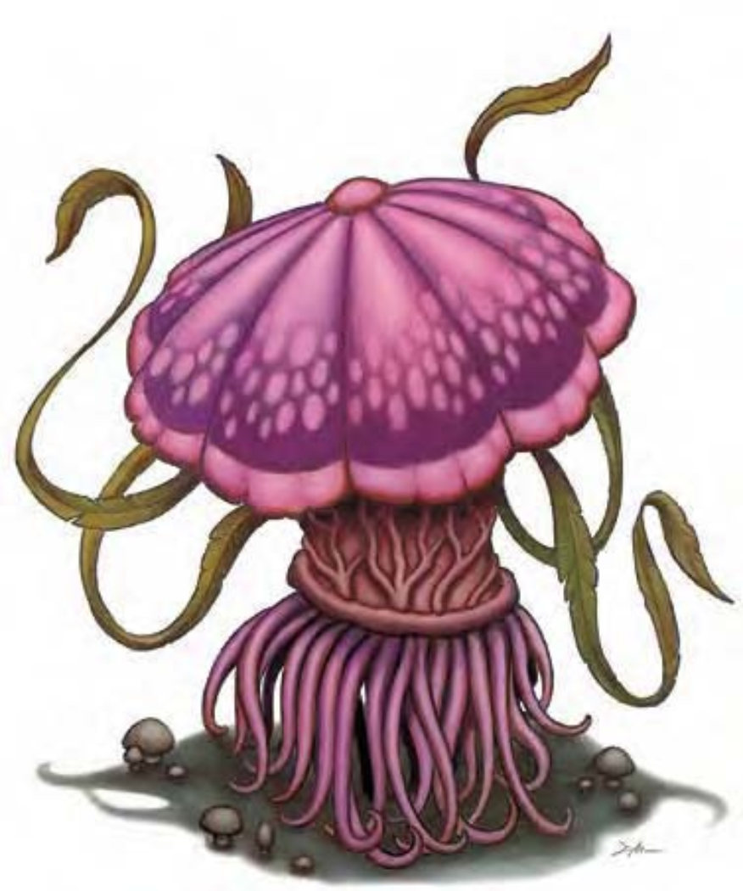

与一般对人畜无害的蕈类不同，以下所述的尖叫蕈和紫蕈对粗心大意的冒险者可能会造成相当的危险性。
蕈类没有叶绿素，无论是根、柄或伞部都没有，因此无法进行光合作用，只能寄生在其他有机物上，分解并摄取养分，为了方便起见，以下将两种蕈类分别介绍，但他们大多混杂生长于一处。
战斗尖叫蕈和紫蕈通常会合作吸引并捕杀猎物。先由尖叫蕈的恐怖叫声引来好奇的生物，紫蕈再试图猎捕，事成后双方会分享战利品。
看来像是与人同高的蘑菇。
尖叫蕈只能待在一处无法移动，为了吸引猎物或受到惊扰时会发出巨大声响。尖叫蕈通常生长在黑暗的地底与紫蕈杂生，也对其分泌的毒素免疫。
尖叫蕈通常呈暗紫色。
战斗尖叫蕈无法进行攻击，只能用叫声引诱敌人靠近。
尖叫（特异）：一旦周遭10英尺内有动静或光源，尖叫蕈就会发出刺耳噪音，持续时间1d3轮。这种声音会吸引附近生物前往查看，常跟尖叫蕈为伍的生物只要一听到叫声就知道有食物上门了。

紫蕈的体型大小和人类相近，伞部有四只长触手，根部还长出许多无以计数的触毛，可以乘载躯体缓慢移动。
紫蕈跟尖叫蕈很像，两者也常常混杂生长。
紫蕈的颜色从浅紫色到深灰色都有，也些还有深紫色的斑点。
战斗紫蕈会用触手鞭打可触范围内的活物。
毒素（特异）：每次造成伤害后，紫蕈就会注入毒素（"强韧"检定的DC=14）。初始伤害与后续伤害均为1d4点力量和1d4点体质伤害。豁免检定DC的调整值与体质调整值相同。
| 资料栏位 | 尖叫蕈 (Shrieker) 中型植物 |
| 生命骰 | 2d8+2（11HP） |
| 先攻 | -5 |
| 速度 | 0英尺 |
| 防御等级 | 8（-5敏捷、+3天生）、接触5、措手不及8 |
| 基本攻击/擒抱 | +1 / -4 |
| 攻击 | ― |
| 全力攻击 | ― |
| 占据/触及 | 5英尺 / 0英尺 |
| 特殊攻击 | 尖叫 |
| 特殊能力 | 昏暗视觉、植物特性 |
| 豁免 | 强韧+4、反射―、意志-4 |
| 属性 | 力量―、敏捷―、体质13、智力―、感知2、魅力1 |
| 技能 | ― |
| 专长 | ― |
| 环境 | 地底 |
| 组织 | 单独或一片（3-5） |
| 挑战级数 | 1 |
| 宝藏 | 无 |
| 阵营 | 总是绝对中立 |
| 进化 | 3HD（中型） |
| 等级修正值 | ― |
| 资料栏位 | 紫蕈 (Violet Fungus) 中型植物 |
| 生命骰 | 2d8+6（15HP） |
| 先攻 | -1 |
| 速度 | 10英尺（2格） |
| 防御等级 | 13（-1敏捷、+4天生）、接触9、措手不及13 |
| 基本攻击/擒抱 | +1 / +3 |
| 攻击 | 触手+3近战（1d6+2附加毒素） |
| 全力攻击 | 4触手+3近战（1d6+2附加毒素） |
| 占据/触及 | 5英尺 / 10英尺 |
| 特殊攻击 | 毒素 |
| 特殊能力 | 昏暗视觉、植物特性 |
| 豁免 | 强韧+6、反射-1、意志+0 |
| 属性 | 力量14、敏捷8、体质16、智力―、感知11、魅力9 |
| 技能 | ― |
| 专长 | ― |
| 环境 | 地底 |
| 组织 | 单独、一片（3-5）或杂生（2-4个紫蕈加上3-5个尖叫蕈） |
| 挑战级数 | 3 |
| 宝藏 | 无 |
| 阵营 | 总是绝对中立 |
| 进化 | 3-6HD（中型） |
| 等级修正值 | ― |